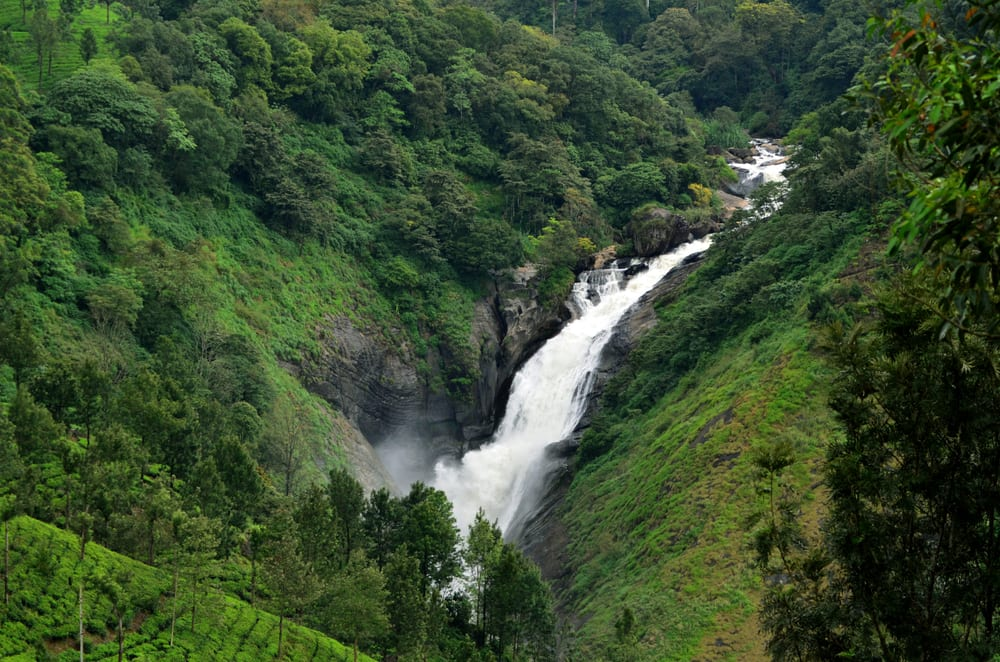

Attukad Waterfalls
Attukad captures one’s attention for its endless trails making it an undisputable part of every trekking enthusiast’s bucket list. Imagine
rolling hills, a multitude of waterfalls, rare species abound, and a cool breeze that accompanies you the entire way. The visuals alone
please your eyes as everywhere you turn; all you can see are natural masterpieces.

General viewing timings:
Monday to Sunday:
9:00 AM - 7:30 PM
Entry Fee:
Free to veiw for all.
Guided tours can cost up to INR 100 per head.
Getting there:
Nearest railway station: Aluva, about 102 km
Nearest airport: Cochin International Airport, about 101 km
Address:
Munnar, Idukki, Kerala, 685612, India
Best time to visit:
Monsoon when the volume of water swells up due to the rains.